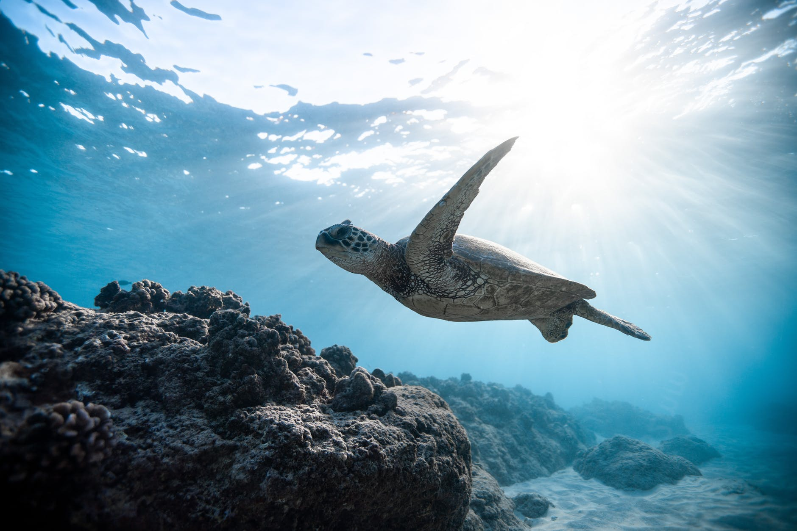
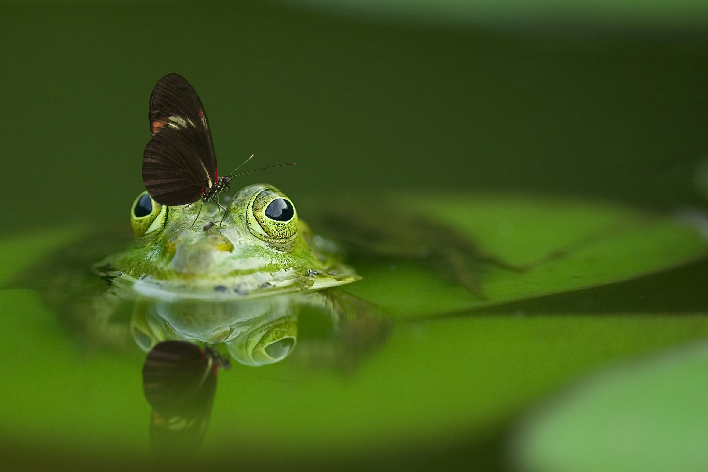
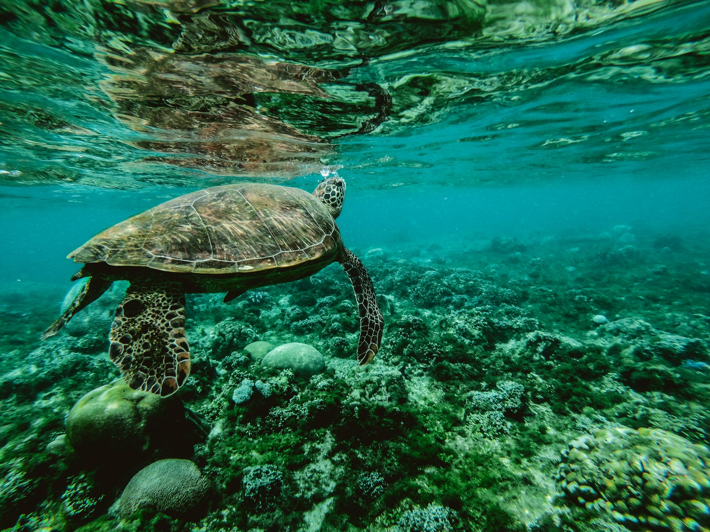

Las especies, como el quetzal, el ahuehuete, el jaguar, la dalia, el cocodrilo, y la mariposa monarca, son las unidades en que categorizamos a todos los seres vivientes, incluido el ser humano. La especie es el grupo de organismos que pueden reproducirse y producir descendencia fértil.
En general, los individuos de una especie se reconocen porque son similares en su forma y función. Sin embargo, muchas veces los individuos de una especie son muy diferentes. Por ejemplo, los machos y las hembras en las aves son muy diferentes, los renacuajos son muy diferentes de las ranas, las orugas son muy distintas a las mariposas.
También sucede lo contrario, algunas especies distintas son muy similares y a veces difíciles de distinguir aun para los ojos más expertos.
Antiguamente, las especies se clasificaban de acuerdo a su forma. Carolus Linneo (1707-1778), botánico, naturalista y explorador sueco propuso un sistema de clasificación que se conoce como el sistema binomial, ya que asigna a cada especie un par de nombres. El nombre del género, con el cual se relaciona a otras especies, y el nombre de la especie, que es único. Por ejemplo, el lobo (Canis lupus) y el coyote (Canis latrans), comparten el nombre genérico Canis ya que son parientes cercanos, pero cada uno tiene su nombre específico único.
Actualmente la ciencia ha descrito aproximadamente entre 1.5 y 2 millones de especies. La Enciclopedia de la vida EOL por sus siglas en inglés, calcula que se han descubierto 1.9 millones. Aunque se cree que podrían existir tantas como 8.7 millones de especies vivas o más. También se sabe que el 99% de todas las especies que han existido alguna vez en toda la historia de la tierra están extintas.
Explora +| Grupo | Especies en el mundo | Especies en colombia | Porcentaje | |
|---|---|---|---|---|
| ANIMALES | ||||
| Mamiferos | 4,381 | 535 | 12,21% | |
| Aves | 9,271 | 1,096 | 11.82% | |
| Reptiles | 8,238 | 804 | 9.76% | |
| Ranas y sapos | 4,780 | 361 | 7.55% | |
| Peces | 27,977 | 2,692 | 9.62% | |
| Ciempies y milpies | 15,200 | 585 | 3.85% | |
| Aranas y alacranes | 92,909 | 5,579 | 6.00% | |
| Insectos | 915,350 | 47,853 | 5.23% | |
| Cangrejos y camarones | 44,920 | 5,387 | 11.99% | |
| Estrellas y erizos | 5,000 | 503 | 7.19% |
| Grupo | Especies en el mundo | Especies en colombia | Porcentaje | |
|---|---|---|---|---|
| Caracoles, almejas y pulpos | 93,195 | 4,100 | 4.40% | |
| Lombrices y gusanos | 16,500 | 1,393 | 8.44% | |
| Rotíferos | 1,800 | 303 | 16.83% | |
| Gusanos planos | 20,000 | 550 | 2.75% | |
| Medusas y corales | 10,000 | 318 | 3.18% | |
| Esponjas | 5,500 | 268 | 4.87% | |
| PLANTAS | ||||
| Magnolias y margaritas | 199,350 | 19,065 | 9.56% | |
| Palmeras y pastos | 59,300 | 4,726 | 7.97% | |
| Cicadas y pinos | 980 | 150 | 15.31% | |
| Helechos | 13,025 | 1,067 | 8.19% | |
| Musgos y hepáticas | 19,900 | 1,482 | 7.45% | |
 |
Algas | 27,000 | 2,702 | 10.01% |
| HONGOS | ||||
| Total de especies descritas | 1,666,576 | 108,519 |
Las subespecies, variedades, o razas geográficas son especies incipientes, es decir especies en formación. Tienen características particulares de anatomía, fisiología o conducta, generalmente adecuados al ambiente en donde viven pero que las distinguen de las características promedio de la especie a la que pertenecen. Por ejemplo, el lobo mexicano (Canis lupus baileyi) es la subespecie más pequeña de lobo gris (Canis lupus). En la nomenclatura científica se distinguen por un tercer nombre que designa la subespecie.
Charles Darwin (1809-1882) y Alfred Russell Wallace (1823-1913), naturalistas ingleses propusieron que todas las especies evolucionan a partir de ancestros comunes a través del proceso conocido como “selección natural”. Darwin publicó el libro “Sobre el Origen de las Especies” en 1859 en donde se describe el proceso de selección natural como análogo a la selección artificial con la cual los humanos han ido seleccionando las variedades de animales y plantas domesticadas.
La selección natural es el proceso mediante el cual los rasgos heredables favorables se vuelven más comunes en sucesivas generaciones en las poblaciones, mientras que los rasgos heredables desfavorables se vuelven menos comunes, debido a la reproducción diferencial en las poblaciones.